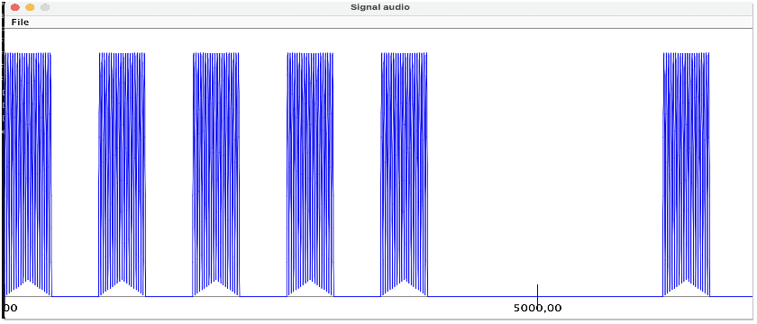
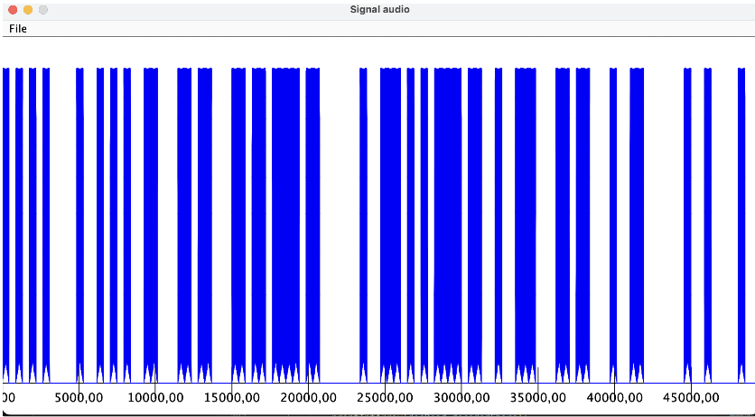

L'UE2 comprend cinq matières différentes : Initiation au développement, Introduction à l'architecture des ordinateurs, Introduction aux systèmes d'exploitation et à leur fonctionnement, Mathématiques discrètes, et Outils mathématiques fondamentaux. En plus de ces matières, il y a une SAE qui porte sur la Comparaison d'approches algorithmiques.
Lors de cette SAE, j'ai conçu et implémenté un algorithme distinct d'un second qui était déjà implémenté pour réaliser le filtrage passe-bas, ce qui permettait la comparaison de ces deux algorithmes pour voir lequel était plus performant et plus optimisé que l'autre. Le filtrage passe-bas est une technique essentielle en traitement du signal qui vise à laisser passer les fréquences inférieures à une fréquence de coupure spécifique tout en atténuant les fréquences supérieures. Ce processus est crucial pour éliminer le bruit de haute fréquence ou pour extraire des composantes de signal utiles en minimisant les interférences.


Grâce à cette UE, j'ai commencé à mieux comprendre comment fonctionne un ordinateur, à coder et à utiliser des outils mathématiques en programmant. En outre, la SAE m'a permis d'avoir un esprit plus critique sur les algorithmes que je code, c'est-à-dire à chercher d'autres manières de les coder de manière plus efficace. De plus, la nécessité de rédiger un rapport en Anglais sur ce projet m'a aidé à améliorer mes aptitudes linguistiques (même si celui-ci à été rédigé en groupe), ce qui est essentiel pour communiquer dans l'univers international de l'informatique.